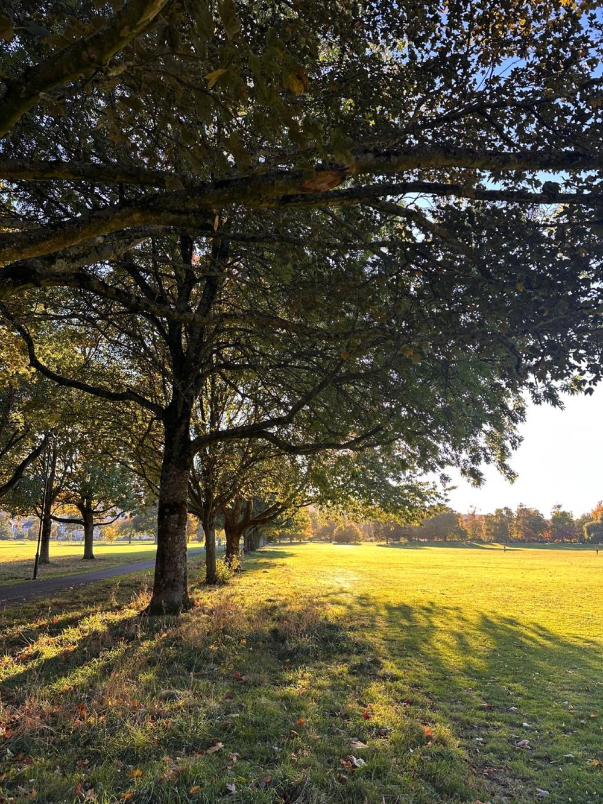

Your stay in Perth
Your apartment is on the South Inch Park. The city centre is a short walk away.
This guide has the essentials first, then a few favourite places.
Follow @marshallapartment on Instagram for more ideas.
The things you need first
Wi-Fi
Connect to the network called MarshallApartment. The password is on the card in the apartment. The Wi-Fi uses the 2.4 GHz band, so it works with phones, laptops and streaming devices.
Keys
During your stay, keep your keys near the exit so you can always get out quickly. When you leave, return the keys to the safe box and close it.
Set for your arrival
The smart heating, lights, TVs and speakers are already set for your arrival.
Google Nest
The Google Nest in the living room responds to most commands. Try:
Hey Google, play Fleetwood Mac radio.
Hey Google, turn down the heating.
Hey Google, romantic lights in the living room.
If that fails, there are always the light switches and the thermostat.
Heating
The smart thermostat controls the heating, and the heating is set for your arrival. Adjust it by voice (Hey Google, turn down the heating
) or at the thermostat.
Hot water
Hot water comes from a combi boiler, so it is heated on demand and never runs out, and you don't need to switch anything on. Kitchen tap: turn the lever fully to the hot side for the hottest water.
TVs
Your apartment has two LG smart TVs, a 50-inch and a 43-inch, both connected to the Wi-Fi. Use the LG remote to open the built-in apps. You can sign in to your own streaming accounts, but please sign out before you leave.
You can also cast to either TV from an Android phone or iPhone. Connect your phone to the apartment Wi-Fi, then tap the cast or AirPlay icon in your app and choose the TV.
Washing machine
Detergent and softener are under the sink.
- Press the power button to turn the machine on.
- Open the door and load your washing, without overfilling.
- Pull out the detergent drawer. Put detergent in compartment 1 and, if you like, softener in compartment 2, no higher than MAX. Leave the other compartment empty.
- Close the drawer and the door.
- Turn the dial to a programme. For an everyday wash, choose Full Load 45 min.
- Press Start/Pause. The door locks while it runs.
- When the display shows END, wait for the door-lock light to go out, then open the door and unload. The machine switches itself off after about 30 minutes.
When you've finished, leave the door slightly open so the drum can dry.
Fire safety and emergencies
Give the address: Basement Flat, 6a Marshall Place, Perth PH2 8AH.
Alarms
Interlinked smoke alarms in the living room and hall, and a heat alarm in the kitchen. A carbon monoxide alarm sits on top of the boiler in the outside boiler room.
Carbon monoxide
The boiler is in the outside boiler room, which is not for guest use. If you hear the carbon monoxide alarm, keep clear of the boiler room, open the windows, leave the apartment and call the Gas Emergency line on 0800 111 999.
Getting out
The exits are the front door and the kitchen door, which opens straight outside. The doors are key-locked, so keep your keys near the exit. The bedroom window can also be used as an escape.
Equipment
The fire extinguisher, fire blanket and first aid kit are all on the open shelf under the kitchen sink.
Certificates
Gas safety and electrical (EICR) checks are current. Copies of the certificates are available on request.
Please let us know of any problems with hot or cold water temperature.
A few simple rules
Bins
If you need help
For urgent care that isn't life-threatening, call NHS 24 on 111.
Nearest A&E
Perth Royal Infirmary, Taymount Terrace, Perth PH1 1NX. The Emergency Department is open 24 hours.
Nearest pharmacy
Dickies Pharmacy, 10–16 York Place, PH2 8EP. About a third of a mile. Monday to Friday 8.30am–5.30pm, Saturday 9am–12.30pm, closed Sunday.
Supermarkets
Nearest: Tesco Express, 122–124 South Street, PH2 8PA. Monday to Saturday 7am–10pm, Sunday 10am–5pm.
Larger: Tesco Superstore, Edinburgh Road, PH2 8DX, about a mile south.
Opening hours change. Check before you go.
Parking, trains and buses
Parking
Pay with the RingGo app. A Perth City Zone Rover 1 weekly ticket covers several car parks.
The weekly ticket includes the South Inch car park. Parking is free on Sundays.
Trains
Perth station is about a 10-minute walk.
Buses and taxis
Local buses stop on South Street and Mill Street. Longer routes leave from the bus station on Leonard Street, next to the railway station. There is a taxi rank outside the railway station.
Where to eat and drink
Restaurants
- Enzo, Speygate
- Milas, Turkish, High Street
- Lamesa, Filipino and Scottish, High Street
- Café Tabou, French brasserie, St John's Place
Bars
- Cullach Brewing, microbrewery, Princes Street
- Wasted Degrees, tap room, George Street
- The Twa Tams, live music, Scott Street
- The Highlander, sports bar, Princes Street
- La Cave à Vin, wine bar, George Street
In Perth

- South Inch and North Inch. Two large city parks. Your apartment is on the South Inch.
- Tay riverside walk. Along Tay Street and back over the river by the Norie Miller Walk.
- Kinnoull Hill. Woodland paths to a 222 m summit and a long view down the Tay.
- Perth Museum. Home of the Stone of Destiny. Free entry; book a Stone time slot at the desk.
- Scone Palace. About two miles north. Usually open April to October.
Day trips
Dunkeld
A small cathedral town on the Tay, about 14 miles north. Riverside walks and The Hermitage woods nearby. Direct trains to Dunkeld & Birnam take about 15–25 minutes.
Pitlochry
A Highland town about 28 miles north. The dam and fish ladder, and walks to Loch Faskally. Direct trains take about 30 minutes.
St Andrews
The old university town and home of golf, about 32 miles east. West Sands beach and the cathedral ruins. Easiest by car.
Distances are approximate, by road.
Before you go
- Bins: green for general waste, blue for cardboard, grey for plastic.
- Keys back in the safe box.
- Out by 11am.
That's everything for check-out.
Book direct
Use this code for your direct booking:
DIRECT5
5% off direct bookings.